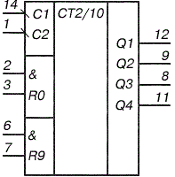
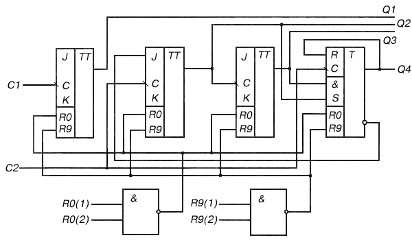
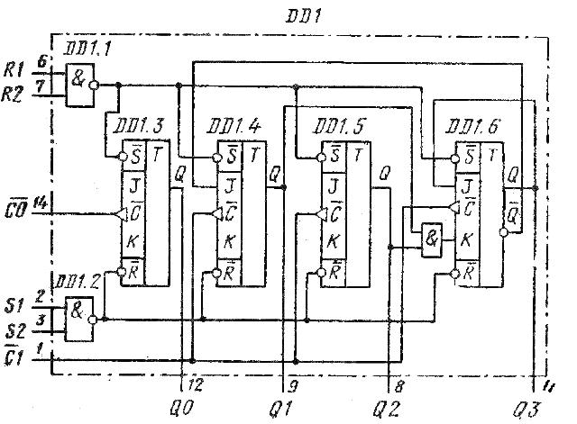

Микросхема К155ИЕ2
Микросхемы К155ИЕ2, КМ155ИЕ2 представляют собой двоично-десятичные четырехразрядные счетчики.
Микросхема состоит из четырех триггеров, внутренне соединенных для деления на 2 и 5. Может использоваться также в качестве делителя на 10.
С помощью входов &R0 микросхему устанавливают в состояние, при котором на всех выходах напряжение низкого уровня; с помощью входов &R9 микросхему устанавливают в состояние, соответствующее числу 9 в двоичном коде (напряжение высокого уровня на выходах 1 и 8). Триггеры счетчика переключаются срезом импульса.
Микросхема К155ИЕ2 в корпусе типа 201.14-1, микросхема КМ155ИЕ2 - в корпусе типа 201.14-8

Рис. 1 - Обозначение микросхемы К155ИЕ2 на схеме
| Назначение выводов: | |
|---|---|
| 1 - вход счетный С2; 2 - вход установки 0 R0(1); 3 - вход установки 0 R0(2); 4,13 - свободные; 5 - напряжение питания +Uп; 6 - вход установки 9 R9(1); |
7 - вход установки 9 R9(2); 8 - выход Q3; 9 - выход Q2; 10 - общий; 11 - выход Q4; 12 - выход Q1; 14 - вход счетный C1; |
Внутренняя схема микросхемы К155ИЕ2 показана на рисунке 2. Первый триггер счетчика DD1.3 может работать самостоятельно. Он служит делителем входной частоты в 2 раза. Тактовый вход этого делителя C0 (вывод 14), а выход QO (вывод 12). Остальные три триггера DD1.4 — DD1.6 образуют делитель на 5. Тактовый вход здесь C1 (вывод 1). Для обоих тактовых входов запускающий перепад отрицательный, т. е. от высокого уровня к низкому.


Рис. 21 - Функциональная схема микросхемы К155ИЕ2
Счетчик имеет два входа R для синхронного сброса (выводы 6 и 7), а также два синхронных входа S (выводы 2 и 3) для предварительной загрузки в счетчик двоичного кода 1001, соответствующего десятичной цифре 9. Поскольку счетчик К155ИЕ2, КМ155ИЕ2 (7490) асинхронный, состояния на его выходах Q0 — Q3 не могут изменяться одновременно. Если -после данного счетчика выходной код, требуется дешифрировать, т. е. перевести его в десятичное число, дешифратор должен стробироватьея на время этой операции. Иначе из-за неодновременности переключения выходных уровней четырех триггеров могут дешифроваться импульсные помехи (клыки).
Входы синхронного сброса RI и R2 (двухвходовой элемент И) запрещают действие импульсов по обоим тактовым входам и входам установки S. Импульс, поданный на вход R, дает сброс данных по всем триггерам одновременно. Подачей напряжения на входы S1 и S2 запрещается прохождение на счетчик тактовых импульсов, а также сигналов от входов R1 и R2. На выходах счетчика Q0 — Q3 (выводы 12, 9, 8, и 11) устанавливаются напряжения выходных уровней ВННВ, что соответствует коду 1001, т. е. цифре 9.
Чтобы получить на выходах счетчика К155ИЕ2, КМ155ИЕ2 (7490) двоично-десятичный код с весом двоичных разрядов 8-4-2-1, необходимо соединить выводы 12 и 1 (т. е. выход Q0 и вход С1. Входная последовательность подается на тактовый вход С0 (вывод 14). Симметричный счетчик-делитель входной частоты в 10 раз получится, если соединить вывод 11 (выход QЗ) с выводом 14 (вход C0). Симметричный способ деления в зарубежной литературе называется bi-quinary, т. е. в переводе — две пятерки. Выходная последовательность при счете двумя пятерками имеет вид симметричного меандра с уменьшенной в 10 раз частотой. Снимается она с выхода Q0 (вывод 12) микросхемы К155ИЕ2 КМ155ИЕ2 (7490).
Для деления частоты на два используется тактовый вход С0 (вывод 14) и выход QО (вывод 12). Для деления частоты в 5 раз подаем входную последовательность на вывод 1. Выходной сигнал получаем на выходе Q3 (вывод 11), Внешние перемычки для этих простых делителей не нужны. Счетчик К155ИЕ2, КМ155ИЕ2 (аналог 7490 ) имеет ток потребления 53 мА и максимальную тактовую частоту 10 МГц. Аналогичная схема варианта 74LS 90 потребляет ток 15 мА и имеет тактовую частоту до 30 МГц.
Режим работы счетчика К155ИЕ2, КМ155ИЕ2 (7490) можно выбрать из таблицы (сброс выходных данных в ноль, установка, т.е. загрузка девятки, счет). В таблице показана последовательность смены напряжений высоких и низких уровней на выходах счетчика К155ИЕ2 и КМ155ИЕ2 (7490) в режиме двоично-десятичного счета, когда требуется соединить внешней перемычкой выход Q0 и вход С1 (т. е. выводы 1 и 12).
Таблица 1
Счет |
Выход |
|||
|---|---|---|---|---|
| Q0 | Q1 | Q2 | QЗ | |
| 0 | В | Н | Н | Н |
| 1 | В | Н | Н | Н |
| 2 | Н | В | Н | Н |
| 3 | В | В | Н | Н |
| 4 | Н | Н | В | Н |
| 5 | Н | Н | В | Н |
| 6 | Н | В | В | Н |
| 7 | В | В | В | Н |
| 8 | Н | Н | Н | В |
| 9 | В | Н | Н | Н |
Зарубежным аналогом микросхемы КМ155ИЕ2 является микросхема 7490.
Таблица 1
| Параметр | Значение |
|---|---|
| Номинальное напряжение питания | 5 В ±5 % |
| Выходное напряжение низкого уровня при Uп=4,75 В | не более 0,4 В |
| Выходное напряжение высокого уровня при Uп=4,75 В | не менее 2,4 В |
| Напряжение на антизвонном диоде при Uп=4,75 В | не менее -1,5 В |
| Входной ток низкого уровня по входам установки 0 и 9 при Uп=5,25 В | не более -1,6 мА |
| Входной ток низкого уровня по счетному входу С1 при Uп=5,25 В | не более -3,2 мА |
| Входной ток низкого уровня по счетному входу С2 при Uп=5,25 В | не более -6,4 мА |
| Входной ток высокого уровня по входам установки 0 и 9 при Uп=5,25 В | не более -0,04 мА |
| Входной ток высокого уровня по счетному входу С1 при Uп=5,25 В | не более 0,08 мА |
| Входной ток высокого уровня по счетному входу С2 при Uп=5,25 В | не более 0,16 мА |
| Ток входного пробивного напряжения по входам установки 0 и 9 с счетным входам С1 и С2 | не более 0,1 мА |
| Ток потребления | не более 53 мА |
| Время задержки распространения при включении по счетному входу С1 при Uп=5 В | не более 100 нс |
| Время задержки распространения при выключении по счетному входу С1 при Uп=5 В | не более 100 нс |
Таблица 2
| Параметр | Значение |
|---|---|
| Напряжение питания | не более 6 В |
| Минимальное напряжение на входе | -0,4 В |
| Максимальное напряжение на входе | 5,5 В |
| Минимальное напряжение на выходе | -0,3 В |
| Максимальное напряжение на выходе закрытой ИС | 5,25 В |
| Температура окружающей среды | -10...+70°C |
Зарубежные аналоги
SN7490AN, SN7490AJ